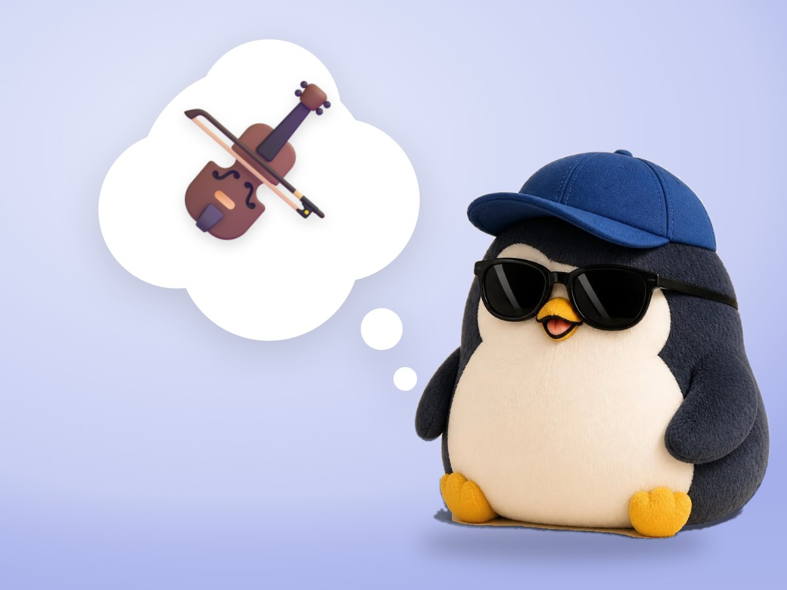

📝 DRAFT · 下書き — まだ本番に出していません · 下書き一覧
🐧 EVERYDAY LIFE⚡ 21 SEC
For deep sadness, a sad song may help more than a bright one 🎻

A Little Down
When you are a little down, a bright song seems to give you energy.
Very Down
But when you are very down, a bright song can make you feel empty.
Match First
At times like that, it seems good to first match your feeling with a sad song.
⚡ TRY IT
Match the song to your heart
Set your sadness, then pick a song.
Sadness4
Which song fits your heart now?
🎺 In sync! The bright song lifts you up.
😶 Too bright… You feel a little empty.
🥱 A little too slow for today. A bright song is OK!
🎻 In sync. The song understands you.
🎶 …and little by little, brighter songs.
🌤️ Now a bright song feels good!
The Name
This is called the "iso principle."
Little By Little
When your feeling matches, you can change to brighter songs little by little.
📚 I learned this from the Japanese blog "Panda no Ondo".